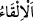
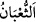
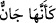
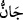
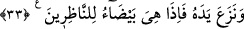

44. Bunun üzerine iplerini ve değneklerini attılar ve: “Fir’avn’un kudreti hakkı
için elbette biz galip geleceğiz.” dediler.
45. Sonra Musa asâsını attı; bir de ne görsünler, onların uydurduklarını
yutuveriyor!
46. (Bunu görünce) sihirbazlar derhal secdeye kapandılar.
47. “Âlemlerin Rabbine iman ettik” dediler.
48. “Musa ve Harun’un Rabbine iman ettik.”
“Bunun üzerine Musa asâsını” elinden “atıverdi”
“
” karşına gelen ve gördüğün yere bir şeyi atmaktır. Sonra örfte her atma için
kullanılmıştır.
“Bir de ne görsünler,” oraya asayı attıktan sonra “asâ apaçık” yâni sihirle veya
başka bir yolla şeklen yılana benzer bir şey değil, yılan olduğu besbelli “koca bir yılan
(oluvermiş)!”
“
” yılanların en büyüğüdür. Farsçası ejderhâdır.
Kâşifî der ki: “Fir’avn onu görünce korktu. Orada bulunan insanlar da hezimete
uğradılar. Kaçış esnâsında yirmi beş bin kişi öldürüldü.”
Fir’avn çok korktuğundan: “Ey Mûsâ! Seni gönderen adına senden onu tutup almanı
istiyorum.” dedi. Mûsâ (a.s.) da onu aldı ve tekrar asâ haline döndü.
Bu âyet ile “
(küçük bir yılan gibi deprenir…)” (en-Neml, 27/10) âyeti
arasında tenâkuz yoktur. “
” küçük yılan demektir. Çünkü onun yaratılışı büyük yılan
gibi, hareketi ve hafifliği ise küçük yılan gibiydi. Nitekim Keşfü’l-esrâr’da böyle
geçmektedir.
Burada kalbe zikir asâsının atılmasına işâret vardır. O da “Lâ ilâhe illallah”
kelimesidir. Bir de bakarsın ki o apaçık koca bir yılan olmuş nefy (Lâ ilâhe) ağzıyla
mâsivallahı yutuyor.
33. Elini de (koynundan) çıkardı; o da seyredenlere bembeyaz görünen (nur
saçan bir şey oluvermiş)!
“Elini de” koynundan “çıkardı;” sağ elini sol kolunun pazusundan çıkardı. “O da”
orada eli “seyredenlere bembeyaz” abraşlık olmaksızın nurlu ve beyaz “görünen (nur
saçan bir şey oluvermiş)!” Mûsâ (a.s.)’ın eli beyaz ve parlak, sonra buğday renginde
(güneş gibi) oldu. Rivâyet edildiğine göre Mûsâ (a.s.)’ın mübarek elinin parıltısı güneş
ışığı gibi göz kamaştırırdı.